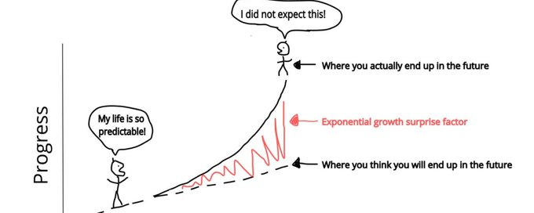

you should be Grok maxxing.
FINALLY. I am able to get $5000 of value a month from my $40 X premium + subscription for simply utilising a new function with specific workflows that I'm going to share here with you right now.
why do I say $5000 a month value? you'll find out
if you have been scrolling through your timeline over the past 4 weeks you'll probably have seen multiple posts about Hermes.
well now you can use Hermes with Grok, and tbh, it's fucking insane.
your X premium subscription has just become even better value for money because of this...
despite a lot of clear mistakes and blunders I still pay for my X premium subscription and recognise it as one of the best investments you can make for yourself.
why is an x premium subscription is +ev?
because most people see $40 a month for a social media you can use for free
oh, and for those living under a rock a quick TLDR on Hermes:
- it's a super cool agent.
- it lives on your computer.
- it holds your context.
- gets smarter over time.
- use it correctly and it's fucking awesome.
listen, I'm not going to sit here and larp like the openclaw influencers and say that if you don't have this you're going to live in poverty forever (lmao), but what I am going to say is that utilising this technology is like popping NZT-48 in limitless.
0:34
go to the end of this article for more alpha.
something like this hahaha ^
grok can now be the engine. a 1m-token model with always-on reasoning, plus voice, image, video, and search, all on your existing subscription. and hermes, from nous research, is the open-source agent that turns that engine into a working system: memory, tools, automation, the lot. mit licence, runs in your terminal.
the beauty is showcased in this infographics:
fk yh
so if you're a creator, researcher, power user, whatever you are, you can do with this in your stack so... let's fucking send it?
PART 1: WHAT DO YOU NEED
I kind of said it and we'll get to setting it all up shortly, but you need the following:
- supergrok (premium + subscription)
- hermes (open sourced)
put plainly: grok oauth gets you model, search, and media. xurl plus a developer app gets you direct x api access. mwahahahaha.
Oh you thought you needed loads more? nah. Maybe a cup of tea/coffee whilst you're putting this bad boy together.
(I'm adding infographics for the visual learners)
PART 2: THE SETUP
so you have your browser and an x subscription so...
level 1: the setup
install hermes here:
bash
curl -fsSL https://raw.githubusercontent.com/NousResearch/hermes-agent/main/scripts/install.sh | bashif hermes is then "not found", it is almost always your shell PATH, not a broken install. fix that before assuming the worst.
connect grok. run hermes model, select xAI Grok OAuth (SuperGrok / X Premium+), approve in the browser at , and pick grok-4.3 (pinned to the top). tokens save to ~/.hermes/auth.json and refresh themselves.
start it.
bash
hermes --tui(hermes on its own works too.)
switch on the research tools. run hermes tools. x search auto-enables as soon as your grok credentials are live, so it is likely already on. confirm web search is active too. that is your whole level 1 toolkit, and it needed no developer app.
test before you build. inside hermes, ask it what model and tools are active, then have it run a real query: "use x search and web search to build a 24-hour brief on [topic]: what happened, why it matters, who is talking about it, what is still uncertain." if that works, you have a research agent.
two caveats the hype merchants skip
the 403. if oauth succeeds in the browser but inference returns 403, it is a subscription or tier gate ("no active grok subscription"), not a token bug. the fix is the api-key path: export XAI_API_KEY=xai-... then hermes config set model.provider xai. the degraded trap, and this one matters for anyone who cares about being right. if x search finds nothing in xAI's index, grok will still hand you a confident answer synthesised from its training data, flagged degraded: true. that is not a real x result. do not cite it as one. treat degraded responses as "the index came back empty", not as findings.
level 2: power setup (if you need it)
add this once level 1 is solid, not before. xurl plus an x developer app unlocks your bookmarks, timeline, and profile data:
bash
curl -fsSL https://raw.githubusercontent.com/xdevplatform/xurl/main/install.sh | bashcreate an app at , set the redirect to http://localhost:8080/callback, then xurl auth apps add my-app --client-id ... --client-secret ..., xurl auth oauth2 --app my-app, xurl auth default my-app, xurl whoami. keep the --app flag or every call 401s. if reads then fail with "client-forbidden / not-enrolled", move the app to pay-per-use and production in the developer console. that is the single most common xurl trap.
level 2 also adds cron automation, telegram or discord delivery, and a vps if you want the system running away from your laptop.
docs as source of truth (the ecosystem moves fast, so trust these over any tutorial, including this one): hermes at , xurl at , grok at .
PART 3: THE WORKFLOWS (1/2)
yes, Hermes gets better over time, but if you're using it like a retard you're going to get a retarded Hermes. fuck that.
use these work flows to start exploring the power of hermes x grok:
layer 1: research workflows (lead with these)
your agent reads faster than you and never gets bored. point it at the open questions.
"search x for posts about [topic] from the last 7 days, drop the engagement bait and the reposts, and give me the 15 highest-signal takes with who said them." "pull all my bookmarks, group them by theme, and flag the five i clearly saved and forgot." (your bookmark graveyard is an unread research corpus. mine it.) "track what these accounts said about [narrative] this week, then tell me where they disagree." "this claim is going around: [paste]. find the original source post, the timestamp, and anyone credible pushing back." "read these three long threads, reconcile them, and tell me what they actually agree on versus what is just vibes."
the move that separates this from a search box: ask it to find the conflict, not just the consensus. consensus is easy and usually wrong by the time it is consensus. the disagreement is where the signal is.
layer 2: creator workflows
the research engine, pointed at output.
"from this week's research, draft three article angles i have not seen anyone else take yet." "turn this brief into a thread outline in my voice, hook first, no fluff." "find the five most-saved posts in [niche] this month and tell me the structure they share." "i am writing about [topic]. what is the strongest counterargument to my take, and who is making it well?"
layer 3: personal intelligence workflows
the quiet daily leverage.
"summarise everything new on [topic i follow] since yesterday in five bullets." "i have a call about [subject] in an hour. brief me on the latest, including anything that changed this week." "watch [account / keyword] and tell me only when something genuinely new happens, not every time it is mentioned."
do not paste these forever. the next section will turn the workflows you reuse into permanent memory, skills, and scheduled jobs, so life becomes that much easier instead of needing a library of by copy-paste prompts.
PART 4: THE WORKFLOWS (2/2)
the flagship: the daily 24-hour brief
if you build one thing, build this. once a structured brief lands every morning, your relationship with information changes for good. a starting prompt:
"build a 24-hour intelligence brief on [topic]. structure it: major developments, high-signal x discussion, official announcements, what looks overhyped, open questions, what to watch next. prioritise primary sources and technically credible voices. strip engagement bait and recycled summaries. separate confirmed from speculation. for any load-bearing claim, give the source and timestamp."
the sections that turn this from a summary into intelligence are separate confirmed from speculation and source every claim. without them you get summarisation sludge.
each of the following runs the same loop, pointed at a different job. the full set with copy-paste prompts is the prompt library (asset 2). the high-value ones:
topic dossiers - deep, structured knowledge on one subject ("the state of open-source agents"), built once and compounded with memory. a reference asset, not a daily read. x narrative monitoring - track dominant narratives, who is credible, where builders and influencers disagree, what is quietly under-discussed. native x search, no developer app. bookmark mining - turn your bookmark graveyard into clustered, themed knowledge. this one genuinely uses xurl, since it is your own saved data. competitive intelligence - track companies, products, and narratives over time instead of stumbling on launches.content synthesis - turn verified research into angles, outlines, and frameworks nobody else is running. research-backed, not slop.
the move that separates all of this from a search box: ask it to find the conflict, not the consensus. consensus is easy and usually stale by the time it forms. the disagreement is where the signal lives.
PART 5: THE SYSTEM
a pile of clever prompts is not a research assistant. a system is. this is the model that makes the output world-class instead of merely fast, and it maps onto exactly what hermes is good at: persistent sessions, tool use, x and web search, long-context reasoning, and memory that carries between runs.
1. collect
pull wide. x search, web search, your bookmarks, lists, feeds, plus any docs, transcripts, or material you hand it. breadth here is cheap because the agent does the gathering. prompt frame: "gather everything relevant to [question] from x, the open web, and my bookmarks. raw, no judgement yet."
2. filter
now cut hard. strip duplicates, weak sources, outdated takes, engagement bait, and low-signal noise. most research fails here, because humans skip filtering and synthesise the noise. the agent does not get tired of saying no. frame: "remove anything low-signal, outdated, or just farming engagement. keep only what a serious person would cite."
3. map
structure what survives. themes, narratives, the actors involved, the specific claims being made, where they conflict, the timeline, and the open questions still unanswered. this is the step that turns a pile into a picture. frame: "map this into themes, key actors, competing claims, and what is still unresolved."
4. verify
cross-check the claims that matter against primary sources, official docs, timestamps, and competing evidence. a confident claim with no source is a liability, not a finding. make the agent show its working. frame: "for each load-bearing claim, find the primary source and the timestamp, and flag anything you cannot verify."
5. synthesise
turn verified, mapped information into the thing you actually needed: a brief, a guide, a comparison matrix, an explainer, an argument, a recommendation. one input, many possible shapes. frame: "synthesise this into a one-page brief: what is true, what is contested, what i should do about it."
6. remember
store the useful residue. context, your recurring preferences, the source map you built, the topic history, and the follow-up questions for next time. this is the stage that compounds, and the one everyone forgets. seed it on purpose. frame:"save my position on [topic], the sources i trusted, and the open threads, so next session starts from here, not from scratch."
treat memory as the asset, not a side effect. an agent that forgets is a faster chatbot. an agent that remembers your sources, your standards, and your open questions is a research partner that knows your work. feed it deliberately.
the six stages are the process. the whole reason to run this inside hermes instead of a chat tab is that you make the process permanent and stop retyping it. three layers do that, and every prompt you write belongs in one of them.
memory, the "what". your standards, preferences, source maps, standing topics. seed them once and they apply to every session. hermes keeps them in markdown files it manages, so you never restate "british spelling, sources inline, no claim without a timestamp" again. skills, the "how". any multi-step workflow you will reuse. run it once, then tell the agent "save this as a skill". it writes a reusable instruction file to ~/.hermes/skills/ and hands you back a slash command. the six-stage loop becomes /research [topic]: one command instead of six prompts. cron, the recurring. anything on a schedule. the morning brief stops being something you run and becomes a job that runs you a brief.
the docs put the rule simply: memory for facts, skills for procedures, and if a task takes five-plus steps and you will do it again, make it a skill. you barely have to remember to do this. roughly every ten turns hermes reviews the session and offers to save something to memory or turn it into a skill on its own. say yes when it is right.
here is the tell that you have done it properly. a fortnight in, you are not pasting prompts. you are firing /research and reading what the 6am job already did for you first thing in the morning. that is the whole difference between owning a prompt collection and owning an intelligence system.
automation: run the loop while you sleep
the six-stage loop is good. on a timer it is unfair. hermes does cron scheduling natively, so you wire the recurring intelligence work to run without you.
morning brief - every day at 06:00, run collect → filter → synthesise on your core topics, and message the brief to your telegram before you wake up. weekly digest - every monday, map the week's narrative shifts in your niche and what changed. source watch - monitor specific accounts or keywords and ping you only when something genuinely new lands, not on every mention.
example, in plain english to the agent:
"every weekday at 6am, search x and the web for new developments on [my three topics], filter the noise, verify the big claims, and send me a five-bullet brief on telegram. remember what you have already told me so you do not repeat yesterday's news."
for heavier jobs, tell it to spin up subagents: one digs x, one digs the open web, one drafts, and they report back to a single brief. that is parallel research from one instruction.
SO THEN?
the test of whether you did this right: a fortnight from now, are you pasting prompts, or are you firing /brief and reading what the 7am job already left you?
then you've set it up right.
(okay guys, I left this bit in here as a secret, I wanted to give you all the cool ways you can utilise hermes x grok so here you go)
PART 6: SECRET PROMPT LIBRARY
the slow way to use a prompt library is to paste prompts. you have hermes, which means most of this should be permanent, not retyped. this asset turns the prompts into a build.
how it works: discover, then promote
run a prompt manually once to see if it earns its place. then promote it to where it belongs:
[→ memory] facts, standards, preferences. the "what". seeded once, shapes everything. [→ skill] multi-step procedures you will reuse. the "how". saved once, fired as a slash command. [→ cron] anything recurring on a schedule. runs without you. [→ manual] genuine one-offs. paste and move on.
the rule of thumb, straight from the hermes docs: memory is for facts, skills are for procedures, and if something takes five-plus steps and you will do it again, make it a skill. hermes also nudges you. roughly every ten turns it reviews the session and offers to save useful context to memory or turn a workflow into a skill on its own. say yes when it is right.
where things live: memory sits in markdown files hermes manages (memory.md, user.md), skills in ~/.hermes/skills/. you do not hand-edit these. you talk to the agent and it writes them. (docs: .)
your first hour, in order
- seed your memory standards (section 1)
- save the operating loop as a skill (section 2)
- wire one cron job (section 3)
do those three and you have a system. everything in the working library after that is just feeding it.
1. the memory layer: seed this first
the "what". do it once. it changes the quality of every answer the agent ever gives you.
how: tell the agent to remember it. it writes to your memory files and carries it forward across every session.
your standards [→ memory]
"standing rule across all sessions: no claim reaches a brief without a primary source and a timestamp, and any x search result flagged degraded gets flagged to me, never quoted as a real x finding. flag anything that fails this instead of smoothing it over. remember this permanently."
your output preferences [→ memory]
"remember how i like output: tight, no hedging, sources inline, british spelling, lead with the answer. apply by default unless i say otherwise."
your source map [→ memory]
"remember which sources i trust on [topic] and which i have told you to discount. weight your research accordingly from now on."
your standing topics [→ memory]
"remember the topics i actively track: [list]. treat these as standing interests and surface anything genuinely new on them."
audit what it holds [→ manual]
"tell me what you currently remember about my work, my preferences, and my active topics, so i can correct anything stale before it shapes your answers."
seed the standards rule before anything else. it is one sentence, and it lifts the quality of everything downstream. an agent that refuses sourceless claims is already worth more than most people's entire research process.
2. the skills layer: save your procedures
the "how". any multi-step workflow you will run more than once. built once, fired as a slash command forever.
how: run the workflow once interactively, get it right, then say "save this as a skill called [name]." hermes generates the SKILL.md in ~/.hermes/skills/, capturing the steps and rules, and it becomes a slash command in your next session.
the flagship: your operating loop [→ skill]
this is the one to build first. the six-stage model is the textbook five-plus-step reusable workflow. build it once:
"i want a reusable research skill. when i invoke it on a topic, run this in order: collect from x search, web search and my bookmarks; filter out duplicates, noise and weak sources; map the themes, actors, claims and conflicts; verify every load-bearing claim against a primary source with a timestamp; synthesise into a one-page brief leading with what is verified; then save anything useful to memory. save this as a skill called research."
next time it is just /research [topic]. one command, the whole loop, your standards baked in.
other strong skill candidates
build these the same way once you have run them once and they work:
/coldstart [→ skill] — map an unfamiliar topic: camps, leaders, core disagreements, the three things to grasp first. /trace [→ skill] — take a claim, find the original source, timestamp, who is amplifying, who credibly disputes it. /brief [→ skill] — turn collected material into a ruthless one-pager: verified, contested, what to do./steelman [→ skill] — strongest case for, strongest case against, no strawmen.
if you have pasted a prompt twice, the second paste was the waste. that was the moment to make it a skill.
3. the cron layer: run it on a timer
recurring work. the operating loop is good. on a schedule it is unfair.
how: tell the agent the schedule in plain english. it sets the cron job and delivers to wherever you have connected it (telegram, discord, email).
morning brief [→ cron]
"every weekday at 6am, run my research loop on [my three topics], filter the noise, verify the big claims, and send me a five-bullet brief on telegram. remember what you have already told me so you never repeat yesterday's news."
weekly digest [→ cron]
"every monday at 8am, map the narrative shifts in [my niche] over the past week: what changed, who changed their mind, what is newly contested. send it as a single digest."
source watch [→ cron]
"monitor [accounts / keywords] continuously. ping me only when something genuinely new and substantive lands, with the source and one line on why it matters. stay quiet otherwise."
end-to-end loop [→ cron]
"on the schedule i set, run the full research loop on [topic] and update your memory with anything new each run, so every run builds on the last instead of restarting."
caution: let any scheduled job run once manually before you trust it on the timer. watch what it produces, correct it, then set it loose.
the morning brief is the one that converts people. wake up to the work half done once and you will not go back to opening tabs at 9am like it is 2022.
4. the working library
the full use-case set. run these manually, then promote the keepers. each carries a tag for where it most likely belongs. apply the section 1, 2 and 3 methods to send it there.
research & intelligence
cold-start a topic [→ skill] — "i am starting from zero on [topic]. map the main camps, who leads each, the core disagreements, and the three things i need to understand before i can have an opinion." what changed[→ cron] — "summarise what is genuinely new on [topic] since [date], not the recurring background noise. five bullets, each with a source and timestamp." signal scan [→ skill] — "search x and the web for [topic] over the last 7 days. give me the 15 highest-signal takes, who said them, grouped by the position they argue."trace a claim [→ skill] — "this is going around: [paste]. find the original source, the timestamp, who is amplifying it, and anyone credible pushing back. tell me how solid it actually is." stress-test a consensus [→ skill] — "everyone agrees that [claim]. find the strongest dissent and who makes it well. if the consensus is right, tell me why the dissent fails." fact-check my draft [→ skill] — "flag every factual claim in this draft. for each, find a primary source or mark it unverifiable. do not let me publish a sentence i cannot back." track the narrative [→ cron] — "track what [accounts] said about [narrative] this week. where do they agree, where do they split, who changed position?" who to watch [→ memory] — "for [topic], who are the five accounts worth following on signal, not follower count? remember them as trusted sources for this topic."reconcile the sources [→ skill] — "read these [threads / docs], reconcile them, and tell me what they actually agree on versus what is just shared vibes." find the conflict [→ skill] — "on [topic], skip the consensus. show me where the serious people disagree and what the disagreement turns on." the matrix [→ skill] — "build a comparison matrix of [options] across the criteria that matter for [my use case]. flag where the data is thin."
x as a research feed
native x search comes free with your grok login. no developer app, no api key. these work the moment you are connected:
search and rank [→ skill] — "search x for [topic] in the last [timeframe], strip reposts and engagement bait, rank what is left by how much it would teach a serious reader." track a thread of accounts [→ cron] — "watch [list]. tell me when they post something substantive on [topic], ignore the day-to-day noise." source the claim back to x [→ skill] — "this claim seems to have started on x: [paste]. find the originating post, the timestamp, and how it mutated as it spread."
if a native search comes back flagged degraded, xAI's index found nothing and grok answered from training data instead. that is not a real x result. do not promote it into a brief.
these need xurl + your own x developer app (level 2, optional), because they touch your private x data, not public search:
mine the bookmark graveyard [→ skill] — "pull all my bookmarks, group them by theme, and flag the five i clearly saved with intent then forgot. those are unfinished research threads." bookmarks into a brief [→ skill] — "take my bookmarks on [topic], filter the weak ones, and synthesise what i was apparently trying to learn into one brief."
creator & growth
angles nobody has taken [→ skill] — "from this week's research on [topic], draft three angles i have not seen anyone run yet. tell me why each is open." structure from a brief [→ skill] — "turn this brief into a thread outline in my voice: hook first, one idea per beat, no fluff, build to a payoff. mark where a visual earns its place." reverse-engineer what works [→ cron] — "find the most-saved posts in [niche] this month. tell me the structure they share and what i could borrow without copying." the counter-take [→ skill] — "i am about to argue [position]. find the strongest counterargument and who makes it well, so i address it before they raise it." repurpose the research [→ skill] — "i did deep research on [topic]. break it into a thread, a long-form outline, and five standalone posts that each stand alone." the hook audit [→ manual] — "here are my last [number] hooks. which actually create curiosity or stakes, and which are just statements with a question mark? be blunt."
personal intelligence
the catch-up [→ cron] — "summarise everything genuinely new on [my topics] since yesterday. five bullets. skip anything you already told me." the pre-brief [→ skill] — "i have a call about [subject] in an hour. brief me on the current state, anything that moved this week, and three questions worth asking." learn it properly[→ manual] — "teach me [concept] in layers, check my understanding, and do not let me nod along to things i have not grasped. then tell me the one thing most explanations get wrong." decision support [→ manual] — "i am deciding between [options]. lay out the real trade-offs for my situation, the strongest case for each, and what i am probably underweighting." the noise filter [→ cron] — "watch [account / keyword] and only ping me when something genuinely new happens. i trust you to judge what is new."
the point
do not build a prompt collection. build a system. memory holds your standards, skills hold your procedures, cron runs the recurring work.
the real power move: owning a x premium subscription and setting this up.
and owning a x premium subscription also helps you build your account, and here's why growing your account is fucking based:



An X account is the highest ROI investment of your life.
Not a degree. Not a job. Not a gym membership, a course, a mentor, a relocation, a stock, a house, a side hustle.
An X account.
@nikitabier posted:
Most people lurking on this app right now are...
oh, pls gib me a like for mi familia b4 u leave 4eva. ciao mi amigo.
$5000 + value from turning an existing subscription you had into an employee that researches for you and stands on fkn bizznizz.
Want to publish your own Article?
Upgrade to Premium